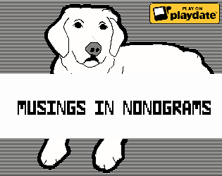

musings in monograms
Updated

'musings in nonograms' is a nonogram/picross.
Instead of solving the puzzle to uncover a small pixel art image, you uncover a large image and blurb/collection of thoughts/diary entry.
Devlogs
| Status | In development |
|---|---|
| Author | mikepurdy |
| Genre | Puzzle |
| Tags | Nonogram, Picross, Playdate |
| Content | No generative AI was used |